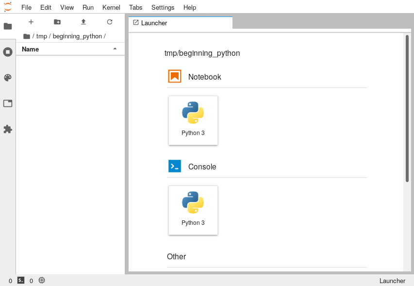

For the purpose of this course we will be using a free tool called JupyterLab which provides you with a local editor in your web browser where you can write and run Python code. The easiest way to get access to JupyterLab is to install the Anaconda Distribution which is a piece of software which includes Python along with lots of other tools. It is available for Windows, MacOS and Linux.
Once Anaconda is installed, start "Anaconda Navigator" and press the JupyterLab button on the main screen:
This will open JupyterLab in your default web browser and will look something like this:

The way that we will be setting up the space is to have a text editor on the left-hand side of the screen and a terminal on the right hand side. We'll use the editor to write our code and the terminal to run it.
In the launcher tab, scoll down to the "Text File" entry and click that. It will turn the editor into a text editor. Then go to File → New and select "Terminal". It will now have two tabs inside the interface, one labelled "untitled.txt" and the other labelled "Terminal 1":
To make our lives easier, let's rearrange things so that we can see the text editor at the same time as the terminal. Do this by pressing and holding down the left mouse button on the tab that says "Terminal 1" and slowly dragging it to the right-hand side of the window. You'll see a blue outline like this:
Release the mouse button and you'll end up with the two showing side-by-side:
Finally, we want to open a Python Console for doing some interactive exploration in. Open this by going to File → New → Console. When it asks you to select a "kernel", choose Python 3 which should be the default. Drag that tab so that it is overlapping with the "Terminal 1" pane. You should have it looking something like:
This layout is just a recomendation and if you'd rather do it differently, that's fine. Also if you're comfortable using an IDE like VS Code, PyCharm or Spyder then you're welcome to.